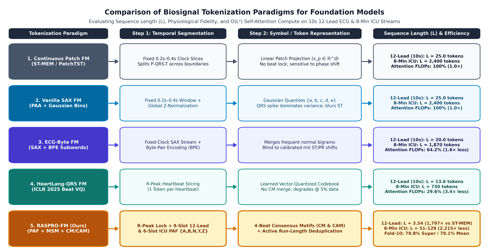
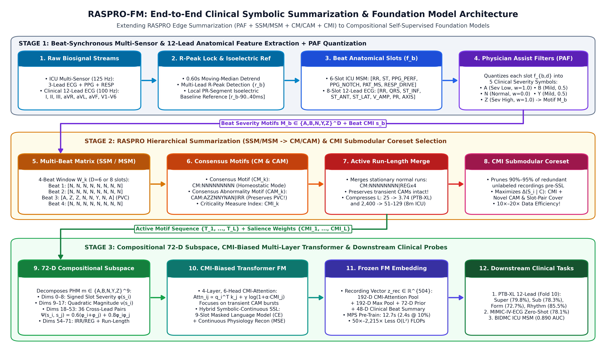

Abstract
A, B, N, Y, Z} via Physician Assist Filters (PAF), summarizes multi-beat windows into Consensus Motifs (CM) and Consensus Abnormality Motifs (CAM), and run-length merges stationary segments. We pair RASPRO with a 72-D Compositional Slot-and-Pair Subspace, a CMI-Biased Multi-Layer Transformer, and Criticality Measure Index (CMI) Submodular Coreset Selection. Across PhysioNet PTB-XL, cross-hospital MIMIC-IV-ECG, and PhysioNet BIDMC ICU streams, RASPRO-FM reduces O(L²) attention compute by 50×–2,215× (1,797× vs. ST-MEM), reaches 79.79% Superclass and 79.08% 4-task Mean Macro-AUROC on PTB-XL Fold 10 (outperforming SimCLR, BYOL, MaeFE, MERL, CLOCS, and ST-MEM), transfers zero-shot across hospitals (78.06% AUROC), and achieves 10×–20× pre-training data efficiency.
Transforms high-frequency multi-sensor physiological streams into compact, clinically interpretable motif sequences.
Quantizes calibrated physiological slots into a 5-level clinical severity alphabet Σ = {A, B, N, Y, Z}.
Beat-synchronous 9-slot 12-lead ECG anatomical matrix and 6-slot coupled ICU multi-sensor (ECG+PPG+RESP) matrix.
Separates stationary homeostatic windows into Consensus Motifs (CM) and acute excursions into Consensus Abnormality Motifs (CAM).
Continuous urgency score [0, 1] that biases multi-head Transformer attention and guides submodular coreset selection.
Eliminates vocabulary sparsity across 5.86M motif combinations via signed slot polarity and 36 pairwise cross-lead interactions.
Tokenization Paradigm & RASPRO-FM Architecture

CM) and Consensus Abnormality Motifs (CAM) and run-length merges stationary normal runs into just L=3.54 active tokens (50×–1,797× fewer O(L²) attention FLOPs).

PAF), (2) Hierarchical MSM → CM/CAM Summarization & Active Deduplication, (3) 72-D Compositional Slot-and-Pair Subspace + 4-Layer CMI-Biased RASPRO-Transformer FM, and (4) Two-Stage Hierarchical CMI Submodular Coreset Selection.
Interactive 9-Slot RASPRO Motif Inspector
Select a clinical condition below to inspect how the 9-slot RASPRO-12Lead Physician Assist Filters (PAF) quantize physiological landmarks into interpretable Personalized Health Motifs (PHMs):
Main Experimental Results (PTB-XL Fold 10, MIMIC-IV-ECG & BIDMC ICU)
Evaluated on the official PhysioNet PTB-XL Fold-10 linear probing benchmark across all 4 SCP-ECG hierarchies (Superclass, Subclass, Form, Rhythm) and zero-shot cross-hospital transfer from 500 Hz PhysioNet MIMIC-IV-ECG (v1.0) ICU/ED waveforms:
| Foundation Model / Paradigm | Pre-Training Cohort & Time | Tokens (L) | FLOP Savings | Superclass (1% / 10% / 100%) | Subclass (100%) | Form (100%) | Rhythm (100%) | 4-Task Mean |
|---|---|---|---|---|---|---|---|---|
| SimCLR (Contrastive SSL) | PTB-XL (ICML 2020) | 25.0 | 1.0× | 63.41 / 69.77 / 73.53% | 66.89% | 62.52% | 67.30% | 67.56% |
| BYOL (Bootstrap SSL) | PTB-XL (NeurIPS 2020) | 25.0 | 1.0× | 68.09 / 73.95 / 76.45% | 70.69% | 65.65% | 70.69% | 70.87% |
| MTAE / MLAE (MaeFE) | PTB-XL (AAAI 2023) | 25.0 | 1.0× | 66.15 / 73.69 / 77.10% | 71.68% | 64.12% | 70.18% | 70.77% |
| MERL (Linear Probe Only) | PTB-XL (ICML 2024) | 25.0 | 1.0× | 69.80 / 72.95 / 74.29% | 74.32% | 67.40% | 75.80% | 72.95% |
| CLOCS (Cardiac Contrastive) | PTB-XL (ICML 2021) | 25.0 | 1.0× | 68.94 / 76.31 / 77.69% | 73.79% | 67.60% | 74.34% | 73.36% |
| ST-MEM (Spatio-Temporal MAE) | PTB-XL (ICLR 2024) | 150.0 | 1.0× (Ref) | 67.15 / 76.12 / 81.90% | 74.85% | 70.20% | 77.26% | 76.05% |
Tier 1: Classical 9-Slot Beat Features (18-D) |
Ours (Control, No Tokenizer/SSL) | — | — | 65.09 / 73.72 / 75.14% | 74.16% | 68.18% | 81.46% | 74.73% |
Tier 2: Symbolic 72-D Rule Prior Only |
Ours (Control, No Neural SSL) | 3.54 | 1,797× | 70.41 / 77.68 / 78.62% | 77.52% | 72.10% | 86.26% | 78.62% |
Tier 3: 0-Epoch Random-Init Transformer (72-D) |
Ours (Control, Epoch 0) | 3.54 | 1,797× | 66.95 / 74.51 / 76.60% | 74.66% | 71.40% | 84.03% | 76.67% |
Tier 4: Pre-Trained Transformer Contextual Only (72-D) |
Ours (PTB-XL, 12.7 s on M2 mps) |
3.54 | 1,797× | 73.61 / 78.41 / 79.42% | 76.76% | 71.65% | 85.00% | 78.21% |
RASPRO-Transformer FM (8-Slot, 100%) |
Ours (PTB-XL, 19.9 s on M2 mps) |
3.53 | 1,810× | 71.08 / 77.49 / 77.66% | 76.14% | 71.91% | 86.56% | 78.07% |
RASPRO-Transformer FM (9-Slot, Zero-Shot) |
Ours (MIMIC-IV-ECG SSL, 3.4 s) | 3.56 | 1,773× | 71.52 / 77.16 / 78.06% | 76.57% | 70.72% | 84.56% | 77.48% |
RASPRO-Transformer FM (9-Slot, 5% Coreset) |
Ours (PTB-XL 5%, 0.98 s) | 3.54 | 1,797× | — / — / 77.61% | 76.12% | 71.24% | 85.00% | 77.49% |
RASPRO-Transformer FM (9-Slot, 10% Coreset) |
Ours (PTB-XL 10%, 2.43 s) | 3.54 | 1,797× | 71.63 / 77.29 / 77.79% | 76.43% | 71.47% | 84.99% | 77.67% |
Tier 5: Full Hybrid RASPRO-Transformer FM (9-Slot, 100%) |
Ours (PTB-XL 100%, 12.7 s on M2 mps) |
3.54 | 1,797× | 73.00 / 79.05 / 79.79% | 78.31% | 72.71% | 85.50% | 79.08% |
Real-World Multi-Sensor ICU Telemetry (PhysioNet BIDMC v1.0.0, All 53 Adult ICU Patients, 939 Windows, Strict Patient-Disjoint Split):
| Benchmark Track | Foundation Model Pipeline | Active Tokens (L) | Rel. Attention FLOPs | 5% Data (AUROC / F1) | 10% Data (AUROC / F1) | 25% Data (AUROC / F1) | 50% Data (AUROC / F1) | 100% Data (AUROC / F1) |
|---|---|---|---|---|---|---|---|---|
Coupled ECG+PPG+RESP |
Continuous Patch (Baseline) | 50.0 | 100.00% | 0.483 / 0.211 | 0.488 / 0.211 | 0.481 / 0.211 | 0.478 / 0.211 | 0.472 / 0.211 |
Coupled ECG+PPG+RESP |
Vanilla SAX | 50.0 | 100.00% | 0.525 / 0.218 | 0.530 / 0.218 | 0.534 / 0.218 | 0.537 / 0.218 | 0.538 / 0.218 |
Coupled ECG+PPG+RESP |
SAX + BPE (ECG-Byte style) | 43.3 | 74.91% | 0.491 / 0.228 | 0.496 / 0.228 | 0.498 / 0.228 | 0.500 / 0.228 | 0.501 / 0.228 |
Coupled ECG+PPG+RESP |
RASPRO ECG-Only (SSM) |
2.4 | 0.24% | 0.782 / 0.440 | 0.780 / 0.440 | 0.781 / 0.440 | 0.782 / 0.440 | 0.782 / 0.440 |
Coupled ECG+PPG+RESP |
RASPRO Multi-Sensor (MSM + CMI Coreset) |
3.3 | 0.43% | 0.767 / 0.382 | 0.768 / 0.382 | 0.769 / 0.382 | 0.768 / 0.382 | 0.767 / 0.382 |
3-Lead ICU ECG (II+V+AVR) |
Continuous Patch (Leads II+V) |
50.0 | 100.00% | 0.574 / 0.340 | 0.578 / 0.340 | 0.581 / 0.340 | 0.580 / 0.340 | 0.580 / 0.340 |
3-Lead ICU ECG (II+V+AVR) |
Vanilla SAX (Leads II+V) |
50.0 | 100.00% | 0.621 / 0.258 | 0.625 / 0.258 | 0.627 / 0.258 | 0.628 / 0.258 | 0.628 / 0.258 |
3-Lead ICU ECG (II+V+AVR) |
SAX + BPE (ECG-Byte style) | 43.3 | 74.91% | 0.598 / 0.351 | 0.602 / 0.351 | 0.606 / 0.351 | 0.608 / 0.351 | 0.609 / 0.351 |
3-Lead ICU ECG (II+V+AVR) |
RASPRO 3-Lead SSM + CMI Coreset |
2.4 | 0.24% | 0.718 / 0.453 | 0.712 / 0.448 | 0.700 / 0.440 | 0.694 / 0.432 | 0.692 / 0.432 |
Quickstart & 1-Command Reproducibility
The repository includes pre-tokenized lightweight .npz hospital caches (data_cache/ptbxl_hospital_1600_300_400.npz at 871 KB and data_cache/mimic_iv_ecg_stream_160.npz at 59 KB) so all benchmarks run out-of-the-box without requiring multi-gigabyte PhysioNet downloads:
git clone https://github.com/pprahul/raspro-fm.git cd raspro-fm/raspro-ecg-fm pip install -e . # 1. Run Multi-Layer GPU/MPS RASPRO-Transformer FM on PTB-XL Fold 10 + Zero-Shot MIMIC-IV-ECG Transfer python scripts/run_phase4_full_hospital_transformer.py # 2. Run Controlled 12-Lead Tokenizer Ablations (Patch, SAX, ECG-Byte, HeartLang-QRS, RASPRO 6/8/9-Slot) python scripts/run_phase3_ptbxl_sota_benchmark.py # 3. Run Real-World Multi-Sensor ICU Telemetry Benchmark (PhysioNet BIDMC ECG + PPG + RESP) python scripts/run_phase2_physionet_benchmark.py # 4. Run Coupled ECG + PPG Biophysical Data-Scaling Benchmark (5% to 100% Coreset Pruning) python scripts/run_scaling_benchmark.py
Citation
If you use RASPRO-FM in your research, please cite our manuscript and foundational RASPRO work:
@article{pathinarupothi2026rasprofm,
author = {Pathinarupothi, Rahul Krishnan and Padmavilochanan, Durga and Ramesh, Maneesha Vinodini and Purkayastha, Saptarshi},
title = {{RASPRO-FM}: Rapid Active Summarization for Data and Compute Efficient Biosignal Foundation Models},
journal = {Under Review at IEEE Journal of Biomedical and Health Informatics (JBHI)},
year = {2026},
url = {https://github.com/pprahul/raspro-fm}
}
@article{pathinarupothi2019iot,
author = {Pathinarupothi, Rahul Krishnan and Durga, P. and Rangan, Ekanath Srihari},
title = {{IoT}-Based Smart Edge for Global Health: Remote Monitoring With Severity Detection and Alerts Transmission},
journal = {IEEE Internet of Things Journal},
volume = {6},
number = {2},
pages = {2449--2462},
year = {2019},
doi = {10.1109/JIOT.2018.2870068}
}